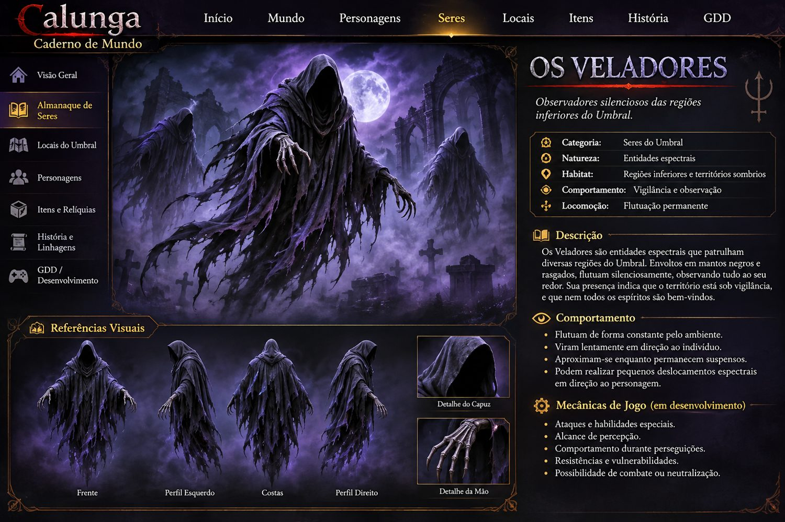

Pesquisa
Referências literárias
Registrar o que cada obra efetivamente descreve, com livro, capítulo e página quando disponíveis.
Referência central para organizar pesquisas, regiões, habitantes, regras e decisões narrativas do universo Calunga.
Este documento acompanha o desenvolvimento do mundo de Calunga. Ele separa referências consultadas, interpretações e criações originais do jogo para preservar a coerência do projeto.
Registrar o que cada obra efetivamente descreve, com livro, capítulo e página quando disponíveis.
Transformar temas em mapas, missões, personagens, desafios e mecânicas próprias.
As referências espíritas e umbandistas não são intercambiáveis. O jogo terá identidade ficcional própria e cuidado com as tradições.
Na narrativa, Lísias apresenta o Umbral como região próxima à esfera dos encarnados, associada a sofrimento, desequilíbrios e agrupamentos por tendências. O capítulo também menciona relações de exploração e perseguição e o trabalho de equipes de auxílio.
Próxima leitura: registrar ambientes, grupos, conflitos, personagens e ações de auxílio descritos na obra.
Próxima leitura: estudar equipes de trabalho espiritual, assistência e processos relacionados ao desencarne.
Ficha recomendada por capítulo: descrição do ambiente; personagens; conflito; forma de auxílio; possível aplicação no jogo; distinção entre fonte e interpretação.
Os nomes abaixo são propostas criativas para Calunga, não divisões geográficas literais estabelecidas por André Luiz ou classificação religiosa.
Tema: ganância, avareza e apego material.
Ambiente: lama cinzenta, chuva fria, névoa, ruínas de banquetes e moedas antigas.
Ideia de jogo: terreno que reduz deslocamento e escolhas envolvendo objetos cobiçados.
Tema: rancor, culpa paralisante e ressentimento.
Ambiente: água parada, árvores retorcidas, névoa baixa e sussurros.
Ideia de jogo: visibilidade limitada, ilusões e rotas que mudam.
Tema: vingança, hostilidade e conflito.
Ambiente: cidade labiríntica em ruínas, barricadas e marcas de batalhas.
Ideia de jogo: facções em disputa, emboscadas e escolhas de resolução.
Tema: isolamento, apatia e perda de propósito.
Ambiente: areia ou cinza, silêncio e construções abandonadas.
Ideia de jogo: desorientação, exploração e pistas discretas.
Tema: confusão e indecisão.
Ambiente: campos enevoados e trilhas repetidas.
Ideia de jogo: orientação, resgate e caminhos variáveis.
Tema ficcional: crueldade e ausência de luz interior.
Ambiente: cavernas, fissuras e visibilidade quase nula.
Ideia de jogo: exploração avançada com luz e proteção espiritual.
Esta aba organiza a geografia jogável de Calunga. A estrutura é modular: o mundo é apresentado em um mapa global, dividido em continentes; cada continente contém zonas, subáreas e instâncias próprias. As zonas serão carregadas individualmente, evitando a necessidade de um único mapa contínuo gigantesco.
Mundo global → Continente → Zona → Subáreas → Instâncias.
A geografia será um espelho distorcido da Terra: continentes reconhecíveis como referência, mas com regiões deslocadas, mares sobrenaturais e territórios próprios do Umbral.
Lista conceitual para expansão do mundo; não significa que todos estarão disponíveis na primeira campanha.
As zonas abaixo já foram discutidas como regiões temáticas. A posição exata, os caminhos entre elas e a sequência de progressão continuam em aberto.
Tema: ganância, avareza, vícios e apego material. Ambiente: lama cinzenta, chuva constante, neblina, ruínas de banquetes e moedas cobertas de musgo. Ideias de mecânica: lama que reduz a velocidade e tentações ligadas a objetos materiais.
Tema: rancor, culpa e sofrimento que não encontra saída. Ambiente: pântano enevoado, água parada e vegetação retorcida. Ideias de mecânica: ilusões, caminhos confusos e efeitos de imobilização.
Tema: ódio, vingança e conflito. Ambiente: cidade arruinada, ruas tomadas por confrontos e construções destruídas. Ideias de mecânica: grupos rivais, emboscadas e confrontos entre facções.
Tema: isolamento, vazio e perda de propósito. Ambiente: vastidão desolada, silêncio e estruturas abandonadas. Ideias de mecânica: desorientação, exploração e encontros raros.
Tema: estagnação, culpa e aprisionamento no passado. Antagonista provisório: Mago dos Fluidos / Senhor da Culpa. Ideias de mecânica: lembranças usadas para paralisar o personagem e áreas de lodo condensado. Confirmar se esta zona é independente do Pântano da Mágoa ou uma subárea dele.
As travessias marítimas entre regiões e continentes serão realizadas com a orientação de Exu Marinheiro, respeitando a representação religiosa escolhida para o personagem. A embarcação terá inspiração em barcos tradicionais portugueses de madeira; o modelo definitivo ainda será desenvolvido.
Exu Marinheiro também poderá orientar o jogador sobre rotas, perigos e missões marítimas. Os detalhes de suas funções serão desenvolvidos com pesquisa e respeito à Umbanda.
O sistema deve impedir que o jogador use uma viagem para ignorar a progressão principal: novos destinos e portais serão liberados por descoberta e requisitos de missão.
Tendências semelhantes podem aproximar grupos e influenciar encontros e comportamentos de criaturas.
Missões concluídas podem alterar iluminação, névoa, vegetação, sons, rotas e presença de NPCs.
Nem todo encontro é batalha: investigar, proteger, negociar ou preparar um resgate também são ações centrais.
As escolhas do jogador devem deixar marcas visíveis no mapa e nas relações entre habitantes.
| Etapa | Função |
|---|---|
| Investigar | Descobrir a história local e a origem do conflito. |
| Compreender | Identificar necessidades e relações entre personagens. |
| Agir | Combater, negociar, proteger ou cumprir uma tarefa. |
| Transformar | Mostrar consequências no ambiente e nos NPCs. |
Nem todo espírito encontrado precisa ser inimigo. Cada personagem deve ter motivação, história, comportamento e possibilidade de interação.
Pode pedir ajuda, evitar contato ou repetir um comportamento. Encontro focado em investigação e assistência.
Antagonista definido por suas ações e relações, não apenas pela aparência.
Pode testar o preparo do jogador, propor uma missão ou controlar o acesso a uma área.
Grupo que realiza resgates, orienta o jogador e oferece missões especiais.
Estas categorias são ferramentas narrativas do jogo, não uma classificação doutrinária.
Registro vivo dos personagens do universo Calunga. As informações abaixo distinguem decisões já discutidas de detalhes que ainda serão desenvolvidos.
Uma das figuras centrais da narrativa original. Umbandista na encarnação contemporânea; sua jornada está ligada à busca por Lucas no Umbral. A versão jogável permitirá escolher o gênero e o nome do personagem, mantendo a linha principal da história.
Programador na vida contemporânea e personagem central do vínculo que impulsiona a narrativa. Sua trajetória atravessa diferentes encarnações e está ligada ao conflito principal do jogo.
Na história, comunica a Helena que Lucas está preso no Umbral. Sua participação, visual, falas e missões serão detalhados em ficha própria.
Guardião de passagem associado ao portal que dá acesso às Calungas. A obtenção da chave depende de uma missão ou prova definida no desenvolvimento.
Esta ficha reúne a origem narrativa em desenvolvimento e a cena planejada para a campanha. A origem ainda não está fechada: as possibilidades abaixo são hipóteses ficcionais para a história, inspiradas nas observações e referências trazidas pelo criador.
A Devoradora do Medo é encontrada em uma caverna, com aparência monstruosa e aracnídea: corpo escuro semelhante ao de uma aranha, oito patas, rosto feminino muito pálido e cabelos negros compridos. É uma criatura temida, associada ao medo e à presença de um ninho na região.
Possibilidade A — A jovem abandonada: teria sido uma mulher muito bonita, abandonada no altar. Após uma vida marcada por sofrimento, teria tirado a própria vida e chegado ao Umbral. Com o passar do tempo, sua aparência espiritual teria assimilado uma forma animalesca.
Possibilidade B — A mulher perseguida: teria vivido em um período de perseguição religiosa na Europa, acusada de bruxaria e morta após sofrer perseguição e medo. No Umbral, a dor, o medo e a revolta poderiam ter contribuído para sua transformação. Passaria então a provocar nos outros o medo que marcou sua própria história.
Nota de pesquisa: essas são hipóteses de narrativa, não fatos históricos ou doutrinários estabelecidos. O contexto da Inquisição e das perseguições por bruxaria deverá ser pesquisado com rigor antes de ser fixado. A ideia de animalização espiritual também será identificada como referência de relatos espiritualistas, sem ser apresentada como fundamento universal da Umbanda.
Helena enfrenta a Devoradora em uma batalha épica dentro da caverna. Quando a criatura é derrotada, cai ao chão e já não consegue sustentar a forma monstruosa. Aos poucos, o corpo aracnídeo se desfaz: as patas desaparecem, a carapaça se dissolve e as sombras recuam. No lugar da criatura surge uma jovem mulher branca, de cabelos negros e aparência de aproximadamente vinte anos.
Desorientada, envergonhada e tomada pela raiva, ela grita para Helena não se aproximar. Helena percebe que, diante dela, já não está a criatura ameaçadora, mas uma mulher em sofrimento. Em vez de atacá-la, aproxima-se e a abraça. A jovem resiste por alguns instantes e então desaba em lágrimas.
Enquanto Helena a acolhe, a cena apresenta fragmentos da vida passada da jovem: sua beleza, sua história, as relações que teve, o abandono ou a perseguição — conforme a origem que vier a ser escolhida —, o medo que sofreu e os acontecimentos que antecederam sua morte. A cinemática retorna à caverna, com Helena ainda abraçando a mulher.
A cena deve provocar compaixão e reflexão: a vitória no combate não precisa significar a destruição de quem está por trás da ameaça. A história coloca em primeiro plano a possibilidade de compreender o sofrimento e buscar o resgate, sem apagar a responsabilidade pelos danos que a criatura causou.
Exu ou Pomba Gira, escolhidos pelo jogador como mentor. A escolha não altera a história principal na primeira versão.
Caboclos, pretos-velhos, exus mirins, comerciantes, barqueiro Exu Marinheiro e equipes de auxílio.
Figuras ligadas às regiões, como o Mago dos Fluidos, o Senhor da Culpa, o General da Vingança e o Barão do Vício. Nomes e funções ainda podem evoluir.
Registrar aparência, comportamento, habilidades e estágios de evolução, incluindo a criatura azul de quatro lados, a forma felina de três caudas, a forma humanoide e a forma final.
Esta seção reúne elementos narrativos e ficcionais do jogo. A representação de entidades e tradições religiosas será tratada com respeito e pesquisa, sem apresentar invenções do jogo como doutrina.
Catálogo das criaturas desenvolvidas para o universo ficcional de Calunga. As descrições registram os conceitos e visuais já discutidos, sem confundir criação do jogo com classificação religiosa ou doutrinária.
Origem e natureza: entidade gerada pelo acúmulo de pensamentos e emoções negativas de várias pessoas. Não nasce de uma única mente. A repetição e a intensidade emocional favorecem sua condensação e autonomia.
Aparência: massa sombria e mutável, sem forma fixa, com tentáculos e extensões que surgem e desaparecem, fissuras de energia interna e movimento fluido e instável. A aparência é influenciada pela emoção dominante.
Variações emocionais registradas: ódio (mais agressiva e destrutiva, com tentáculos afiados e movimentos bruscos); inveja (mais astuta e observadora, movimentos silenciosos e aparência esguia); culpa (forma densa e pesada, movimentos lentos e resistentes); obsessão (instável e insistente, com estruturas circulares e tentáculos que se multiplicam).
Ciclo de evolução: 1. Condensação — pequena massa de energia, quase imperceptível; 2. Formação — ganha volume e consistência; 3. Consolidação — desenvolve extensões e reage ao ambiente; 4. Autonomia — torna-se entidade independente, capaz de se movimentar e agir por conta própria.
Escala visual de referência: condensação (~0,5 m), formação (~2 m), consolidação (~4 m) e autonomia (6 a 10 m ou mais). Em ambientes urbanos do Umbral ou cavernas e regiões densas.
Aparência aprovada: criatura aracnídea de corpo escuro e oito patas, com rosto feminino muito pálido e cabelos negros compridos. A versão atual substitui a antiga ideia insetoide. A forma humana revelada após a batalha é uma jovem mulher branca, de cabelos negros e aparência de aproximadamente vinte anos.
Comportamento e alimentação: alimenta-se do medo. Habita cavernas profundas, constrói ninhos no teto e o cenário pode apresentar restos de vítimas. Criaturas menores patrulham a floresta ao redor de seu território.
Variações de porte: existem exemplares de diferentes tamanhos; foi proposta uma forma ancestral de aproximadamente 5 a 8 metros.
Ambiente visual: caverna escura, ninhos suspensos e sinais da presença de criaturas menores. A imagem aprovada da criatura no ninho deve ser a referência visual principal.
Em aberto: nome das criaturas menores, habilidades específicas, padrão de caça e mecânicas de combate ainda precisam ser detalhados.

Natureza: entidades espectrais humanoides associadas à vigilância de regiões inferiores do Umbral. Sua origem, consciência e possível hierarquia ainda não foram definidas.
Aparência aprovada como conceito: figura alta e encapuzada, com manto negro, comprido, envelhecido e rasgado. O rosto permanece completamente oculto pela escuridão do capuz. Os braços são longos, com mãos de aparência deformada; a parte inferior do corpo se dissolve em sombras, sem pernas visíveis.
Locomoção: flutuam continuamente, deslizando pelo cenário sem caminhar. Podem realizar pequenos deslocamentos espectrais em direção ao personagem; frequência, alcance e condições ainda serão definidos.
Comportamento: observam silenciosamente o ambiente e podem virar lentamente na direção de uma presença percebida. Sua função conhecida no conceito é patrulhar e vigiar territórios, mas não está decidido se servem a algum senhor das cidades trevosas ou se agem por conta própria.
Referência visual: atmosfera de figuras encapuzadas espectrais, inspirada no impacto visual dos Dementadores, mas com identidade própria para Calunga.
Em aberto: origem, hierarquia, relação com outros habitantes, habilidades, ataques, percepção do jogador e possibilidade de combate ou neutralização.
Natureza: parasita do Umbral, sem forma fixa, que se prende à aura humana e se alimenta de medo, traumas, vícios e ansiedade.
Efeitos no hospedeiro: cansaço constante, ansiedade, medo, perda de foco e esgotamento.
Tamanho registrado: variável, de aproximadamente 10 cm a 1,5 m.
Variações visuais: forma-massa, forma-tentáculos e forma-larval. Pode ser encontrada em ruínas, cavernas, pântanos e cidades trevosas.
Sequência de ataque: 1. Aproximação; 2. Fixação; 3. Drenagem; 4. Esgotamento.
Referência visual aprovada: larva fixada na nuca, na base do crânio, sugerindo influência ou controle sobre o hospedeiro. A imagem aprovada deve orientar a representação.
As notas são guardadas neste navegador. Exporte uma cópia para não depender apenas do armazenamento local.